Electricidade Básica
O que é a Electricidade?
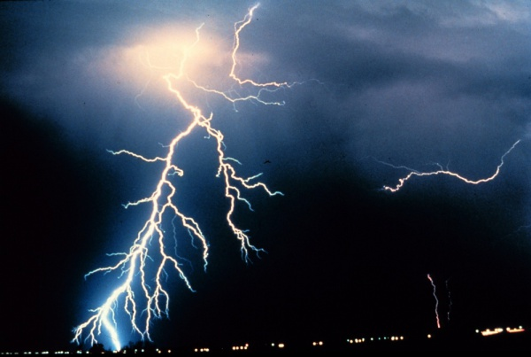E a Eletrocussão?
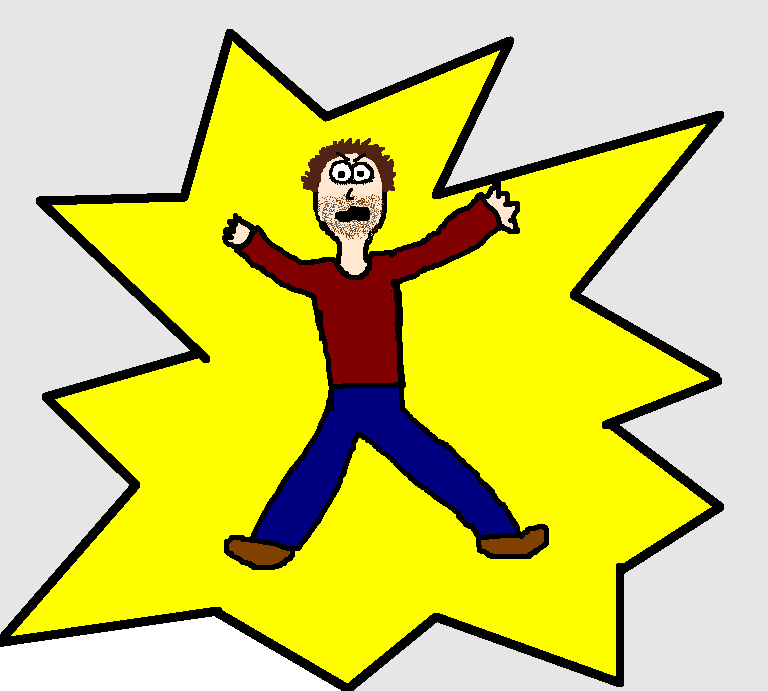A Tomada Eléctrica
Dá choque?
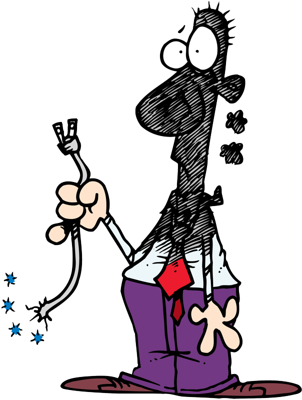E uma Pilha?
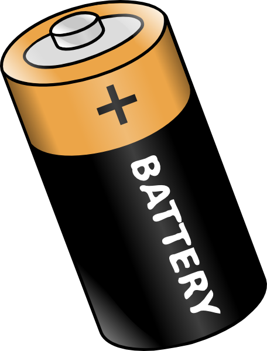E se for a Bateria do Carro?
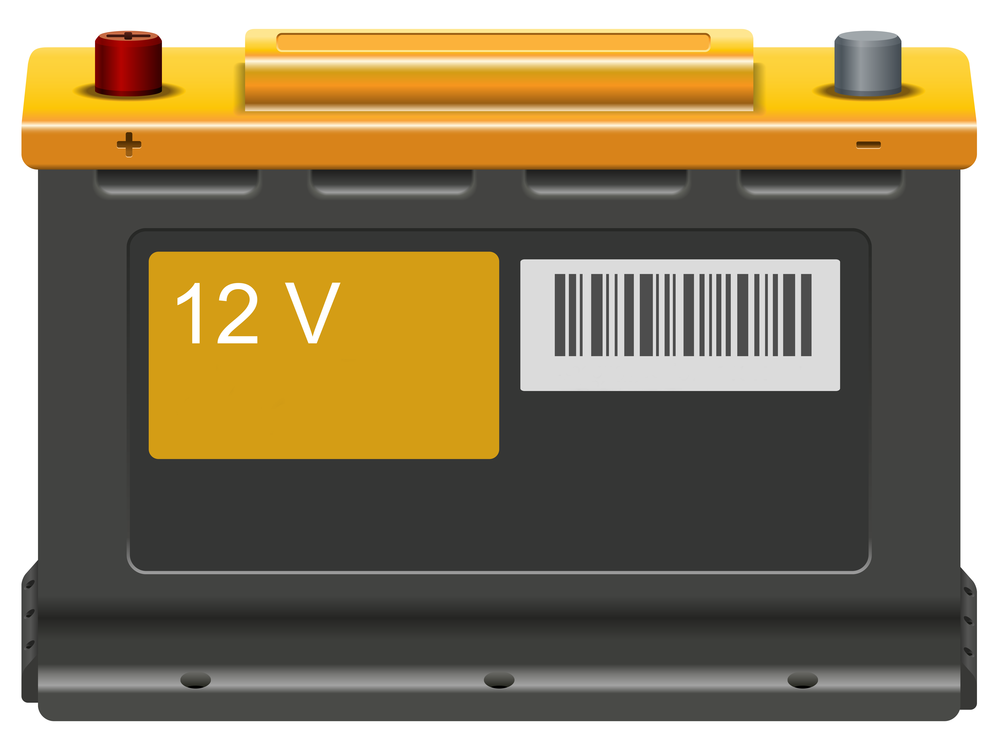Afinal o que é a Electricidade ???
Movimentação de cargas eléctricas
Carga é uma propriedade da matéria, tal como massa, volume ou densidade. A carga pode ser de dois tipos, positiva(+) ou negativa(-)
Na realidade, esta é uma questão complexa e para a qual não existe uma resposta definitiva, mas apenas representações abstratas de como a electricidade interage com o meio ambiente
Átomo
Bloco básico de construção da vida e da matéria
O físico Dinamarquês Niels Bohr introduziu em 1913 um modelo do átomo que nos permite estudar a electricidade:
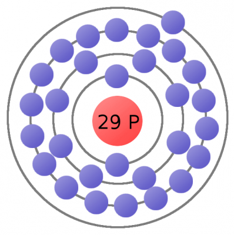Um átomo de cobre consiste num nucleo com 29 cargas positivas (protões) rodeado por um numero igual de cargas negativas (electrões)
Corrente Eléctrica
Cargas differentes atraem-se
Movimentação de cargas eléctricas

Estudo Básico da
Corrente Eléctrica
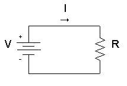Voltagem, Corrente, Resistencia e a Lei de Ohm
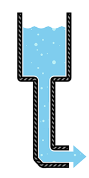Para descrever voltagem, corrente e resistencia, vamos utilizar um reservatório de agua como analogia, em que a carga eléctrica é representada pela quantidade de água
Voltagem
Tensão ou Diferença de Potencial
Pode ser representada pela pressão da água no bocal do tanque:
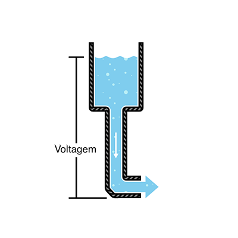A unidade de medida é o Volt (V), em homenagem ao físico Italiano Alessandro Volta
Amperagem ou Intensidade de Corrente
Pode ser representada como a quantidade de água que flui pelo bocal do tanque por unidade de tempo. Quanto maior for a pressão maior o fluxo de corrente e vice-versa.
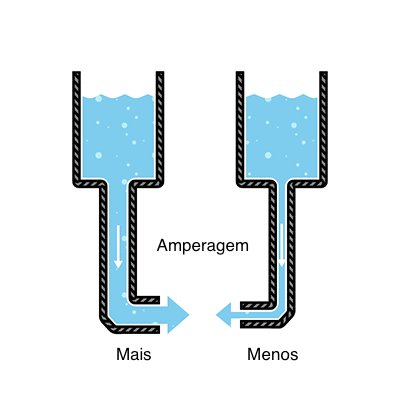 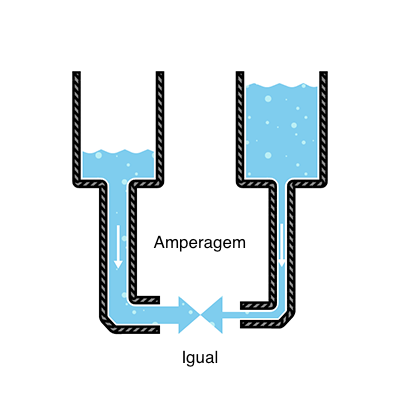A unidade de medida é o Ampere (A), em homenagem ao matemático e físico Francês André-Marie Ampère.
`1A=6.241*10^18` electrões por segundo
Resistencia
Assumindo uma pressão igual, não é possivel fazer passar a mesma quantidade de água por um bocal estreito ou por um bocal largo
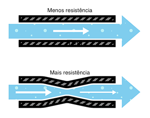Esta resistencia ao fluxo é medida em Ohm (Ω), em homenagem ao físico alemão Georg Simon Ohm
Lei de Ohm
Combinando as medidas de Voltagem, currente e resistência,

Ohm desenvolveu a formula `V=R*I`, sendo que:
- V = Voltagem em volts
- I = Currente em amperes
- R = Resistencia em ohms
Corrente Electrica
O fluxo da corrente electrica foi representado no sentido inverso ao fluxo de electrões porBenjamin Franklink
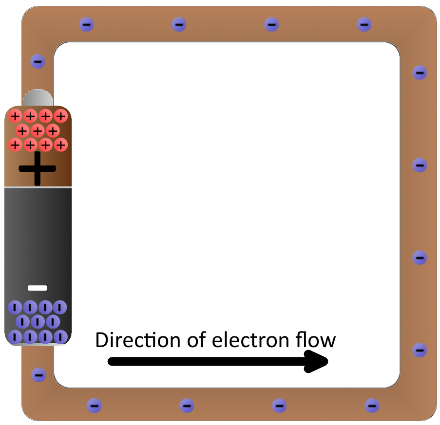 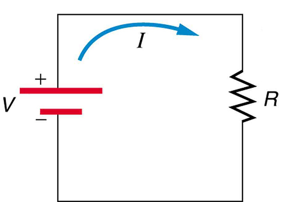E a bateria do nosso carro?
- Contrações musculares ocorrem a partir de 0.01 amperes
- Efeitos irreversíveis podem ocorrer a partir de 0.2 ampreres
- Correntes a partir dos 0.5 amperes podem ser fatais
- Em condições óptimas, a resistência oferecida pelo corpo humano pode ser tao elevada como 100 000 Ohms
- Pele molhada pode baixar a resistencia do corpo humano até valores tão baixos como 1 000 Ohms
- Em condições normais, a resistência do corpo humano assume valores na casa dos 50 000 Ohms